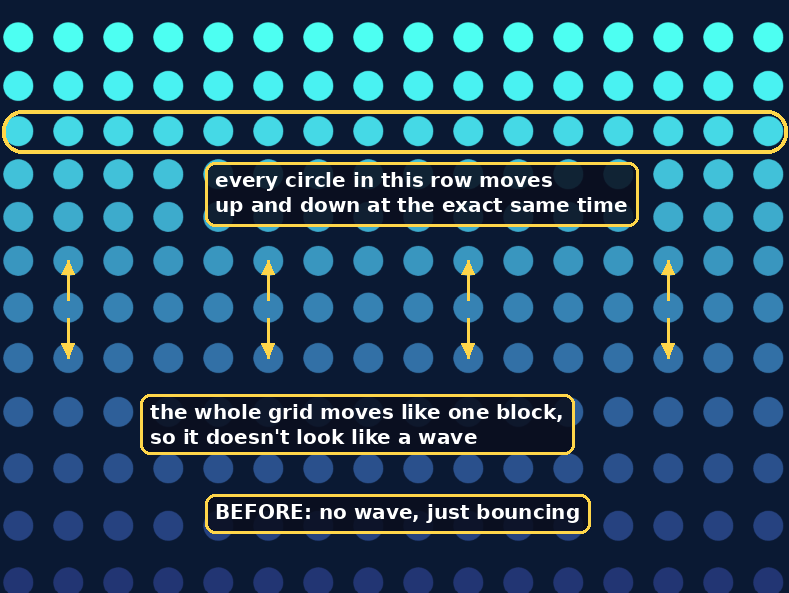
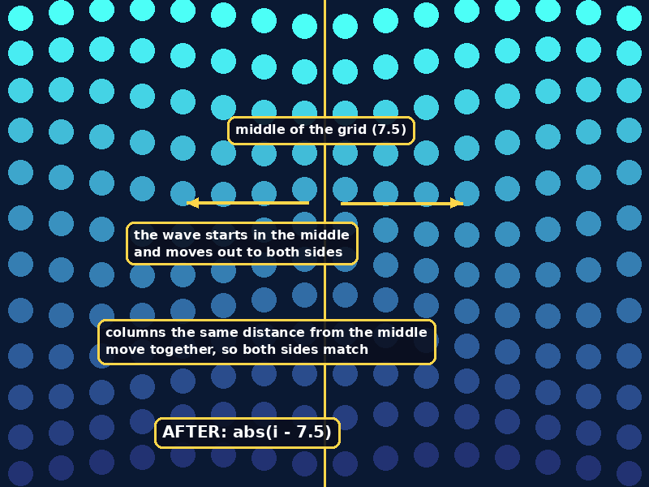

Ocean Waves
A grid of circles that moves like ocean waves. The rows get darker toward the bottom, like deeper water. The wave starts in the middle and moves out to both sides.
Problems and Solutions
- I couldn't get the wave to move properly.
I couldn't picture what the wave should look like, so I tried a few versions. Along the way I ran into two smaller problems:- All the circles moved together like one block.
Solution: I addedj*0.5insidesin()so each row moves a little later.

- The left and right sides didn't match.
Solution: I usedabs(i - 7.5)so the wave starts from the middle.

- All the circles moved together like one block.
Most Interesting Problem: Getting the Wave to Move Properly
My hardest problem was getting the wave to move the way I wanted. I knew I wanted ocean waves, but I couldn't picture how the circles should move. Should they all bounce together, move left to right, or start from the middle? I couldn't tell until I saw it.
So I tried different versions and fixed one thing at a time. First all the circles moved together, which didn't look like a wave. Adding j*0.5 made the rows move one after another. Then the two sides didn't match, so I used abs(i - 7.5) to start the wave from the middle. That looked the best, so I kept it. I learned that trying things out is easier than guessing in my head.